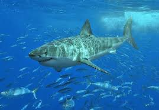
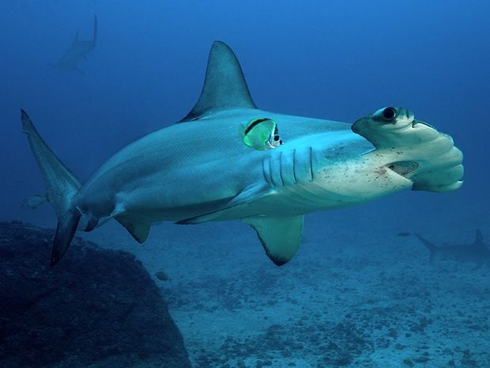

Tubarão-De-Pontas-Brancas-De-Recife

Este tubarão menor e tímido tem uma estrutura longa e fina e um olhar carrancudo e quase rabugento no rosto. Este é um dos poucos tubarões de requiem que não precisa continuar nadando para respirar.
Tubarão Touro
Os tubarões-touro têm a dúbia distinção de ser uma das três principais espécies envolvidas em ataques de tubarão não provocados em humanos. Eles tendem a frequentar águas quentes, rasas e muitas vezes turvas perto da costa.
Tubarão Branco
O tubarão branco (ou grande branco) é um dos tubarões mais conhecidos. É uma das maiores espécies de tubarões, com um tamanho máximo estimado de cerca de 6 mts., embora existam relatos não confirmados de tubarões brancos crescendo a 7 mts.
Tubarão-Martelo- Recortado
Esses tubarões-martelo são únicos por causa da forma recortada da borda frontal de sua “cabeça de martelo”. Estes tubarões de águas abertas têm sido observados em muitas partes do mundo e em muitos habitats à procura de comida, geralmente peixes, invertebrados e tubarões e raias menores.
Tubarão Cobra

O tubarão cobra é um tubarão primitivo que se parece com uma enguia marrom escura ou cinza. Eles são encontrados principalmente nos oceanos perto da Noruega, África do Sul, Nova Zelândia e Chile.